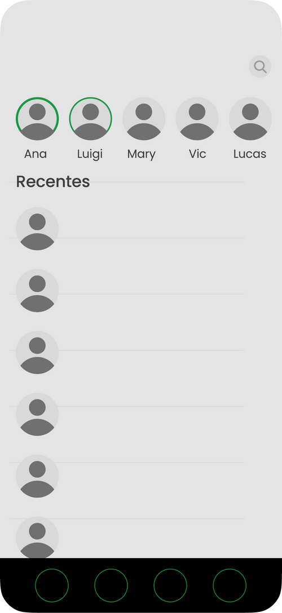
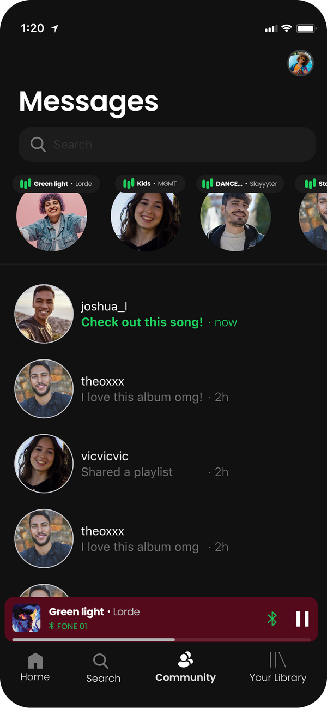

Academic research turned redesign — investigating how Spotify's existing connection features fail through poor discoverability, and proposing a unified social experience that drives Free → Premium conversion.
Role
UX Research
Mobile Redesign
Timeline
2025 — Ongoing thesis
Context
University thesis
Marketing campaign
Goal
Free → Premium
Conversion
The Brief
The thesis brief: design a marketing strategy for Spotify focused on driving Free → Premium conversion. Instead of approaching this as advertising, my team and I treated it as a product design problem — what feature could Spotify build that would make Premium feel essential?
Our hypothesis: music is inherently social, but Spotify's social features are buried, broken, or invisible. Fix the social layer and you fix conversion.
Research
We started with the existing Spotify chat — a feature that ships in the app but most users don't know exists. Our research showed people share music constantly, just not inside Spotify. They share via WhatsApp, Instagram, iMessage.
The opportunity: bring that sharing back into the app, where the music actually lives. Make social features so good that staying in Spotify feels easier than leaving it.
Combined with broader Gen Z research showing dissatisfaction with traditional social media — and a desire for genuine connection through shared interests — the direction became clear: music as a connection layer, not a content layer.
Low-Fi Wireframes
Before committing to a single direction, my team and I sketched two complementary low-fi options to test with peers:
A
Direct Messaging
1-on-1 chat with friends. Send songs, voice notes, shared listening sessions. Free users limited to 3 messages/day — Premium unlocks unlimited.
B
Community Hubs
Genre and artist-based communities where fans discuss, share playlists, attend exclusive Q&As. Premium unlocks posting and exclusive artist communities.

Hi-Fi Designs
After testing the wireframes with our group, we moved both directions into hi-fi to evaluate the visual experience. Both screens were built using Spotify's existing design language — same dark theme, same green accents, same component patterns — to make the proposal feel like a natural extension of the product, not a redesign of it.

Key Decisions
01
Community as a nav tab
First-class navigation, not buried in settings. The feature only matters if users find it without searching.
02
Premium as a soft paywall
Free users see the value first, hit limits second. The paywall is the feature working — not a wall blocking it.
03
Music context everywhere
Every chat, post, and community is anchored in real songs and playlists — never abstract social activity disconnected from listening.
Reflection
This project is ongoing. We're currently testing the hi-fi designs with a broader group of Gen Z users, refining the conversion flow, and writing the academic component of the thesis.
What I've learned so far: the best marketing strategy is sometimes a product strategy. You can't ad-spend your way past a fundamental UX gap.